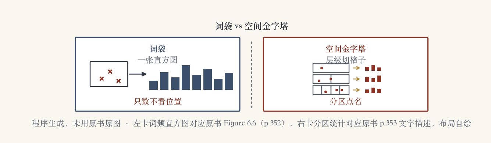
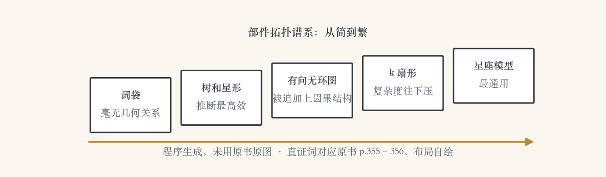

第 6 章 · 图像分类
认出「这一类」：图像分类开篇
上一集认单个，这一集认类别。
十类照片，必须留「以上都不是」。
十年之间，这个领域进步惊人。
本集讲最经典的三个板块。
依据：原书第 349–350 页
任务差别
实例：这一张，位置不能错
分类：这一类，姿势都算
类别开放，要给拒识选项
正课第四十九集
01 / 9
第一招词袋 · 原书第 352 页
第一招：词袋，整图变直方图
词袋、特征袋、关键点袋，三个名字。
统计视觉词分布，做成直方图。
和训练图像比对，最像的就是答案。
分类不做几何验证，类内一致性弱。
依据：原书第 352 页
流水线四步
提特征
聚类成视觉词
统计直方图
分类器判决
正课第四十九集
02 / 9
首创与选配 · 原书第 352–353 页
Csurka 首创与 Zhang 选配
Csurka 2004 首创「关键点袋」。
仿射区域、SIFT、K 均值词表。
朴素贝叶斯对支持向量机，后者胜出。
Zhang 换检测器、描述子、核函数。
依据：原书第 352–353 页
2006 升级版
普通 SIFT 块 + boosting
少量几何一致性
三维度整套对比
正课第四十九集
03 / 9
把空间加回词袋 · 原书第 353 页
把空间加回词袋：金字塔两连
金字塔匹配：不做量化，逐层装箱。
直方图交集，越细的层权重越高。
空间金字塔：按层级切格子统计。
密集网格采样，无纹理区更给力。
依据：原书第 353 页

词袋整图直方图与空间金字塔分区统计｜程序生成，未用教材或论文原图
正课第四十九集
04 / 9
量化之争与学习特征 · 原书第 353–354 页
量化之争与学习特征
量化还是连续，稀疏还是密集，争论多年。
Boiman 等直接比最近邻，胜过量化。
类特异特征常用随机森林实现。
生物视觉层级变换加支持向量机。
依据：原书第 353–354 页
两股力量
不量化：直接对全部特征
学特征：为深度网络铺路
手工特征还剩最后几页
正课第四十九集
05 / 9
部件模型 · 原书第 354–355 页
部件模型：弹簧与树拓扑
找部件、量几何，1973 年就有。
Fischler 和 Elschlager 命名图画结构。
能量＝部件得分 + 成对关系得分。
树形拓扑 + 动态规划，学习推断可行。
依据：原书第 354–355 页
加速手段
马氏距离（第 5 章）
快速距离变换
每个交互接近线性
正课第四十九集
06 / 9
谱系与上下文 · 原书第 355–357 页
拓扑谱系与上下文
词袋 → 树和星形 → 有向无环图。
k 扇形 → 星座模型，越来越复杂。
上下文：只认物体不问场景是大短板。
墨渍反例：转九十度全是同一形状。
依据：原书第 355–357 页

部件拓扑谱系：词袋、树和星形、有向无环图、k 扇形、星座模型｜程序生成，未用教材或论文原图
正课第四十九集
07 / 9
场景当整体读 · 原书第 357 页
场景当整体读：两层星座
空间金字塔和部件模型都在用上下文。
上下文模型把物体组装成场景。
每类物体有几个，事先不知道。
顶层高斯，底层高斯混合，数量未知。
依据：原书第 357 页
Sudderth 两层星座
顶层：物体间相对分布
底层：部件相对物体中心
隐狄利克雷过程定数量
正课第四十九集
08 / 9
收束 · 下一集深度网络
收束：手工特征与深度网络前夜
词袋只数不看位置。
金字塔把空间加回来。
部件模型装上弹簧关节。
上下文把场景当整体读。
依据：原书第 358 页
下一集
整图匹配的好处
深度网络的中心收益
下一集：深度网络
正课第四十九集
09 / 9